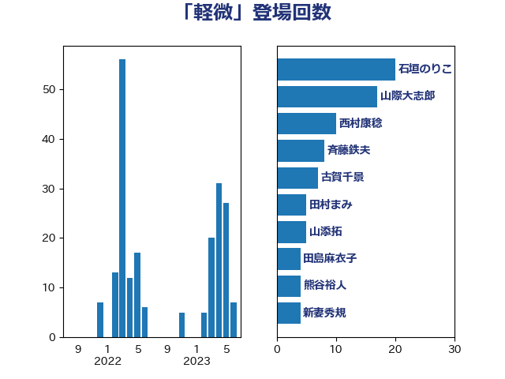

単語「軽微」

| 石垣のりこ | 立憲民主党 | 20 回 |
| 山際大志郎 | 自由民主党 | 17 回 |
| 西村康稔 | 自由民主党 | 10 回 |
| 斉藤鉄夫 | 公明党 | 8 回 |
| 古賀千景 | 立憲民主党 | 7 回 |
| 田村まみ | 国民民主党 | 5 回 |
| 山添拓 | 日本共産党 | 5 回 |
| 田島麻衣子 | 立憲民主党 | 4 回 |
| 熊谷裕人 | 立憲民主党 | 4 回 |
| 新妻秀規 | 公明党 | 4 回 |
| 吉川沙織 | 立憲民主党 | 4 回 |
| 馬淵澄夫 | 立憲民主党 | 3 回 |
| 階猛 | 立憲民主党 | 3 回 |
| 永岡桂子 | 自由民主党 | 3 回 |
| 堀場幸子 | 日本維新の会 | 3 回 |
| 保岡宏武 | 自由民主党 | 3 回 |
| 鈴木俊一 | 自由民主党 | 2 回 |
| 藤岡隆雄 | 立憲民主党 | 2 回 |
| 矢倉克夫 | 公明党 | 2 回 |
| 田中健 | 国民民主党 | 2 回 |
| 湯原俊二 | 立憲民主党 | 2 回 |
| 枝野幸男 | 立憲民主党 | 2 回 |
| 後藤祐一 | 立憲民主党 | 2 回 |
| 小沢雅仁 | 立憲民主党 | 2 回 |
| 宮本徹 | 日本共産党 | 2 回 |
| 奥野総一郎 | 立憲民主党 | 2 回 |
| 中野英幸 | 自由民主党 | 2 回 |
| 三浦靖 | 自由民主党 | 2 回 |
| 鬼木誠 | 立憲民主党 | 1 回 |
| 青柳陽一郎 | 立憲民主党 | 1 回 |
| 青島健太 | 日本維新の会 | 1 回 |
| 長浜博行 | 無所属 | 1 回 |
| 鈴木敦 | 国民民主党 | 1 回 |
| 金子道仁 | 日本維新の会 | 1 回 |
| 野田佳彦 | 立憲民主党 | 1 回 |
| 重徳和彦 | 立憲民主党 | 1 回 |
| 道下大樹 | 立憲民主党 | 1 回 |
| 足立敏之 | 自由民主党 | 1 回 |
| 足立康史 | 日本維新の会 | 1 回 |
| 藤巻健太 | 日本維新の会 | 1 回 |
| 田中昌史 | 自由民主党 | 1 回 |
| 浜田聡 | NHK党 | 1 回 |
| 浅川義治 | 日本維新の会 | 1 回 |
| 河野太郎 | 自由民主党 | 1 回 |
| 池畑浩太朗 | 日本維新の会 | 1 回 |
| 水野素子 | 立憲民主党 | 1 回 |
| 森本真治 | 立憲民主党 | 1 回 |
| 末松義規 | 立憲民主党 | 1 回 |
| 岸田文雄 | 自由民主党 | 1 回 |
| 岬麻紀 | 日本維新の会 | 1 回 |
| 岡本三成 | 公明党 | 1 回 |
| 山本博司 | 公明党 | 1 回 |
| 小沼巧 | 立憲民主党 | 1 回 |
| 宮口治子 | 立憲民主党 | 1 回 |
| 室井邦彦 | 日本維新の会 | 1 回 |
| 大塚耕平 | 国民民主党 | 1 回 |
| 城井崇 | 立憲民主党 | 1 回 |
| 吉田統彦 | 立憲民主党 | 1 回 |
| 古川禎久 | 自由民主党 | 1 回 |
| 井坂信彦 | 立憲民主党 | 1 回 |
| 上田勇 | 公明党 | 1 回 |